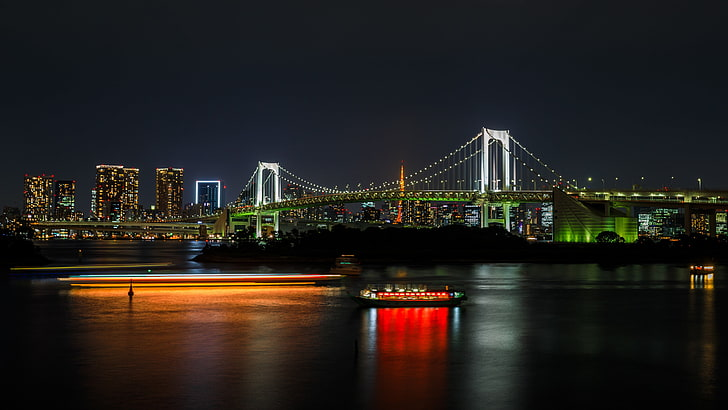

Lugares
Akihabara

Es un distrito "friki" donde puedes gastarte todo tu dinero en merchandising de todo tipo de series japonesas, comida local...
Parque Ueno
El parque ueno es el parque mas popular en el que podras pasear por estanques museos y templos.
Templo Sensoji

Uno de los templos mas representativos y el mas antiguo de la ciudad sobre la religion budista.
Tokyo Skytree

Cerca de Asakusa en el barrio de sumida, se encuetra la tokio skytree una torre de 634 metros de altura
Odaiba

Es una isla artificial situada en la bahia de tokio y coectada con la ciudad por el largo del puente rainbow

Noticias
Economia
Tratándose de un proceso histórico, la economía japonesa desplegó un crecimiento a partir de 1960, cuando el primer ministro Hayato Ikeda se propuso doblar la producción en una década, consiguiéndolo en solo cinco años, asimismo, evitó la entrada de capital extranjero y fomentó la innovación tecnológica, junto con una estrategia de creación de empleo público para estimular la demanda y el consumo interno, es decir Japón producía para los japoneses.
Deportes
Mañana se disputara en la copa Asiatica el esperado partido Japón vs Corea del Norte en el cual habran nombres de gran significado como Matsuda o Fushimoto.
Tecnologias
La carrera por la supremacía tecnológica enfrenta a potencias como Estados Unidos, China y la Unión Europea en el campo de batalla de la innovación y el desarrollo. Sin embargo, hay un antiguo actor que podría estar a punto de volver a la competición. Se trata de Japón, una estrella que dejó de brillar en este terreno durante casi dos décadas al ser superado por vecinos como Corea y Taiwán, pero que recientemente está consolidando alianzas y aumentando la inversión en el sector para volver a ser uno de los ejes digitales del planeta. Hubo una época en que Japón era sinónimo de innovación. Sony, Nintendo, Canon, Toshiba, Mitsubishi, Honda; eran solo algunas de las marcas que iban a la vanguardia de la tecnología, creando productos de calidad que dominaban sectores enteros. De hecho, la unidad de inteligencia de The Economist situó al país como el más innovador del mundo en 2002. Asimismo, el Índice Global de Innovación (GII) de la Organización Mundial de la Propiedad intelectual (WIPO) lo situaba en el puesto cuatro en 2007.